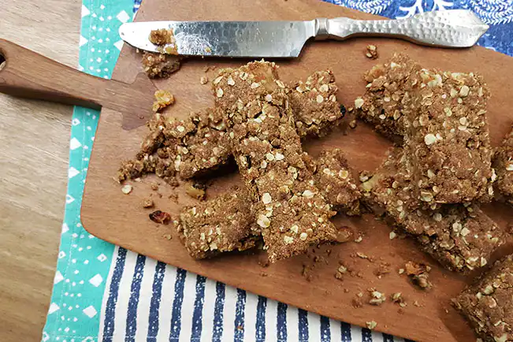

Voltar
Barra de Aveia e Maçã

Ela é prática, gostosa e livre dos aditivos químicos que estão na versão comprada pronta. Lanchinho saudável de verdade!
Ingredientes
- 4 maçãs (cerca de 700 g)
- 250 g de manteiga
- 2 xícaras (chá) de farinha de trigo integral
- 1 xícara (chá) de aveia em flocos
- ¾ de xícara (chá) de açúcar mascavo
- ¼ de xícara (chá) de uva-passa
- caldo de ½ limão
- ½ colher (chá) de canela em pó
- 1 colher (chá) de sal
- manteiga e farinha de trigo para untar e polvilhar a assadeira
Modo de Preparo
- Preaqueça o forno a 180 °C (temperatura média).
- Unte com manteiga uma assadeira de 22 cm x 28 cm. Polvilhe com farinha de trigo, chacoalhe bem para cobrir o fundo e as laterais e bata na pia para tirar o excesso.
- Descasque e corte as maçãs ao meio. Descarte o miolo com as sementes e corte cada metade em fatias finas. Transfira para uma tigela, acrescente as uvas-passas, regue com o caldo de limão e polvilhe com a canela. Misture bem e reserve.
- Numa panela, coloque a manteiga, o açúcar mascavo e leve ao fogo baixo. Mexa de vez em quando até derreter. Desligue o fogo e deixe amornar enquanto separa os outros ingredientes.
- Numa tigela, misture a farinha integral com a aveia e o sal. Acrescente a manteiga e açúcar derretidos aos poucos, mexendo com a espátula para incorporar até formar uma farofa úmida.
- Transfira metade da massa para a assadeira. Com as mãos, espalhe e pressione a massa para cobrir todo o fundo da assadeira, formando uma camada uniforme. Distribua as fatias de maçã sobre a massa - não se preocupe em colocar uma ao lado da outra, as fatias podem ficar sobrepostas. Distribua o restante da massa sobre a maçã, cobrindo bem toda superfície, sem deixar espaços vazios. Aperte delicadamente com as mãos, para compactar levemente a massa - a ideia é que ela fique firme depois de assada para ser cortada em barrinhas.
- Leve ao forno para assar por cerca de 40 minutos, ou até começar a dourar - as bordas ficam mais crocantes e o centro ainda macio.
- Retire do forno e espere amornar, por cerca de 15 minutos antes de cortar - assim as barrinhas não racham ao serem cortadas. Com uma faca (ou espátula de padeiro), corte as barrinhas ainda na assadeira, em retângulos de 3 cm x 7 cm (se preferir, corte em quadrados). Deixe esfriar completamente antes de tirar da assadeira - as barrinhas terminam de firmar depois que esfriam. Sirva a seguir ou conserve num recipiente com fechamento hermético por até 5 dias.